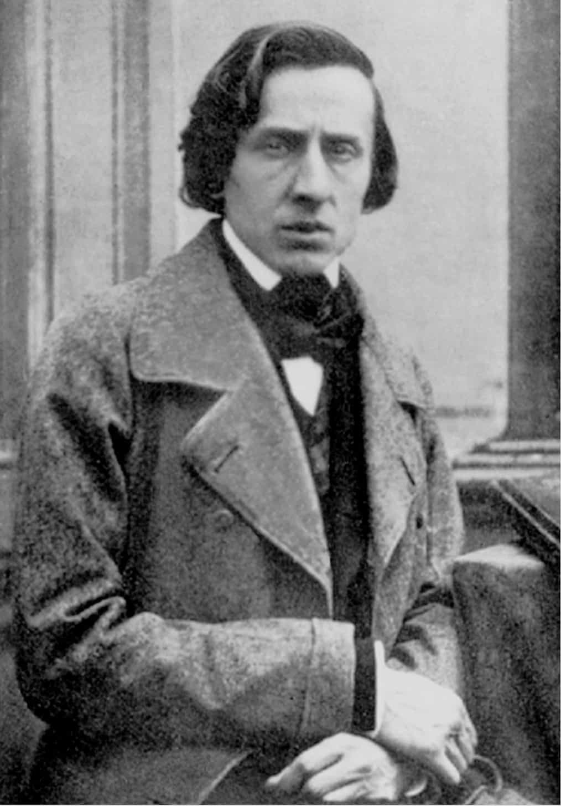
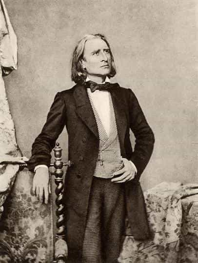
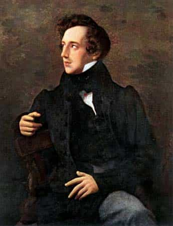
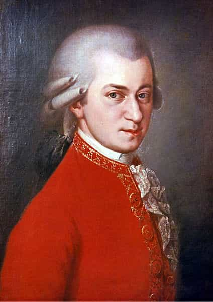
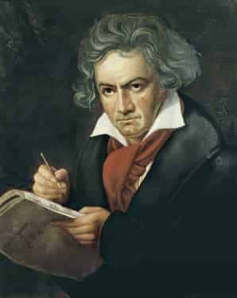

True classical music has remained nearly uncorrupted by modern influence. It is a favorite of many individuals I have known in traditionalist circles, thanks in part to its healthy blend of culture, spirit, emotion, and liveliness. Unlike most modern music, the classical genre maintains Western heritage in its very notes.
Since I was a young child, I personally have listened to classical music. I grew up engaged in the styles and sounds of Bach, Mozart, and Vivaldi. For those of you who are newer listeners to what should be the most revered form of music in the Western World, I have put together a list of my top five favorite composers of all time.
5. Frédéric Chopin

Chopin was a half Polish, half French composer who is quite famous for his nocturnes (short romantic compositions) more than anything. Through his somewhat tragic life, he managed to produce some of the greatest and most recognizable compositions in the entire field of classical music. Two examples would be “Tristesse” and “Op. 28 No. 4,” the latter of which has been sampled in many other tracks.
Chopin’s music is often darker in general feel than that of the others mentioned here, normally conveying emotions of sadness and grief. One could assume that this is mostly due to his short life in which he faced many struggles and unfortunate events. However, some examples contain more positive elements, such as “Nocturne Op. 9 No. 2.” Overall, Polish and French influences adorn much of his musical portfolio.
4. Franz Liszt

A musical genius from Hungary in the 1800s, Liszt produced some seldom heard (in modern times), but very intriguing pieces. I find him to have been a particularly skilled composer who was able to take on many fronts of the orchestra and piano. He was quite well known in his day for departing from the normative principles of music.
His music is normally lighthearted and inspiring, and is one of my personal favorites for listening to while I work or study. Influences in his music came from Slavic, Hungarian, German, and Romani music. Some of my personal favorites from his works are “Hungarian Rhapsody No. 2,” “Paganini Etude No. 6,” and “Sonata in B minor.”
3. Felix Mendelssohn

Mendelssohn was another one of the German greats who was recognized as an extremely talented individual from a young age. Hailed as the “Mozart of the 19th Century” by Schumann, his stance on the development of musical form was rigidly strict, in contrast to Liszt who was mentioned above.
Mendelssohn is famed for his many symphonies, of which I find particular enjoyment in listening to. Some of my favorites out of his symphonies are the “Symphony No. 1” and “Symphony No. 5.” This article could not be written, however, without mentioning Mendelssohn’s astounding piano works and chamber music, of which the “Variations Sérieuses” stand out. Mendelssohn also composed some extraordinary hymns which each deserve a good listen as well.
2. Wolfgang Amadeus Mozart

Mozart is one of the few names from classical music that virtually everyone knows. An Austrian prodigy who mastered the concerto, the opera, and the symphony to a degree that few others can boast of, his legacy stands strong today. Even as a man, Mozart displayed a pious faith in the Roman Catholic religion, and lived a moral life that anyone could admire. He did not profit all that greatly off his works, and the cause of his death has been often debated.
Pieces such as the “Magic Flute,” “Requiem,” and “Clarinet Concerto K. 622” display his talent at its most wonderful. Mozart’s music had wide influences to it, from Turkey to Italy, to Austria, and beyond. This musical genius’s works flow best when reading, studying, sleeping, or simply relaxing.
1. Ludwig Van Beethoven

In my opinion, no musician can ever surpass the legacy of Beethoven. Born in Germany, but finding a residence in Austria, Beethoven’s skill in composing was matched only by the sheer perseverance seen in his life story. Barely able to hear on his own , and forced to survive some of the most turbulent events in European history, he still produced what are to me the greatest sonatas, symphonies, and concertos of all time.
“Für Elise” is one of the first works that comes to my mind when I think of Beethoven, with its calm and relaxing tone, and varying pace. “Moonlight Sonata” is yet another remarkable construction of Beethoven’s, in the same league as “Ode to Joy” and “Rage Over a Lost Penny.” I personally listen to Beethoven’s compositions constantly, and at many different times in the course of the day.
Honorable Mentions
There are many other composers who made exceptional musical works, but who I did not feel were at the absolute top of the charts. Some of these honorable mentions, who I considered placing in this list but eventually did not, include:
- Johann Sebastian Bach: An extremely skilled German composer famous for his harpsichord and organ works
- Antonio Vivaldi: An early Italian composer famous for his orchestral works like “The Four Seasons”
- Camille Saint-Saëns: A later French composer with a gift for comical and darker sounding pieces such as the “Danse Macabre”
- Pyotr Illich Tchaikovsky: A reasonably well-known Russian composer famous for his “1812 Overture” and ballets
- Johannes Brahms: Yet another German composer, hailing from Hamburg, famous for his many variations on the themes of other composers
I consider the above listed composers to be the greatest of all time. Their works are giants compared to those of modern musicians in any genre, and their legacies have not faded as time strolls on. I encourage the reader, even if they are not an avid listener of classical music, to try listening to some of the enthralling pieces developed by these artists of our past. Who knows, you may find that you enjoy some of them even more than I do.
Read More: 7 Pieces Of Beautiful Classical Music For Beginners